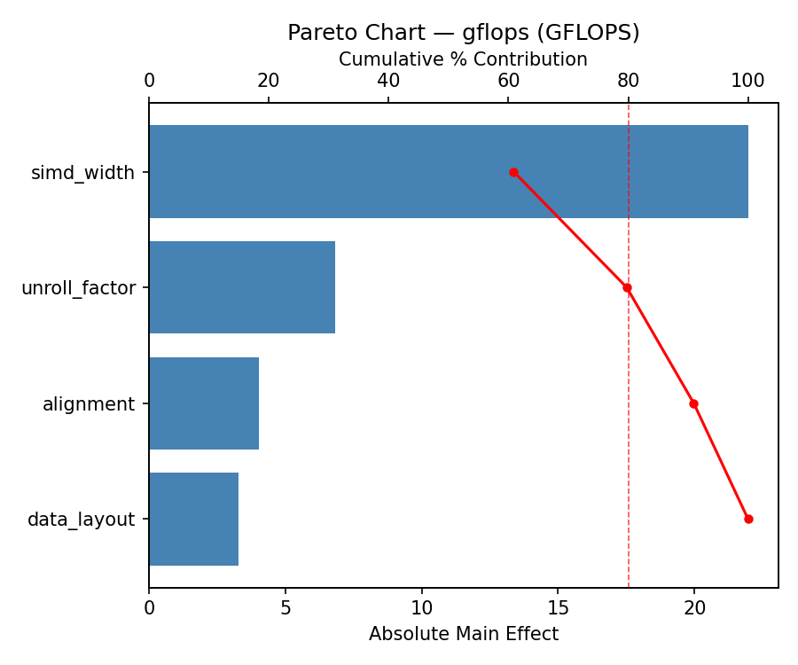
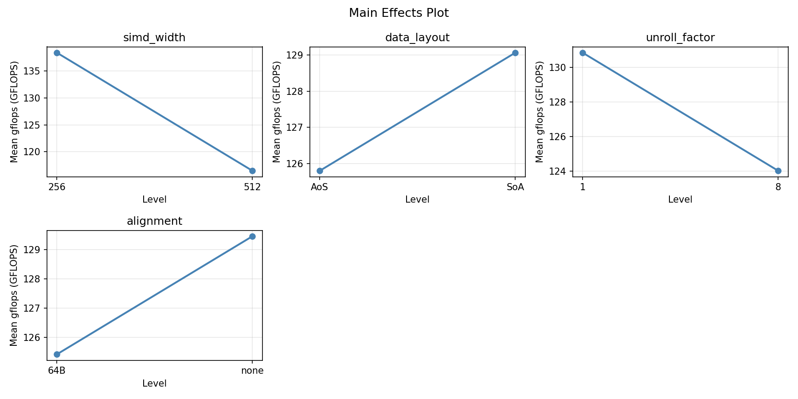
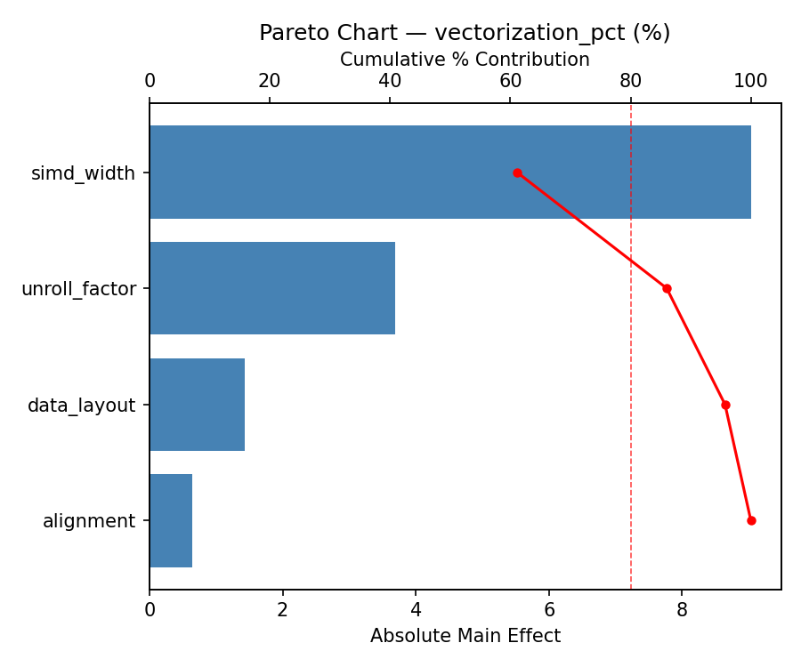
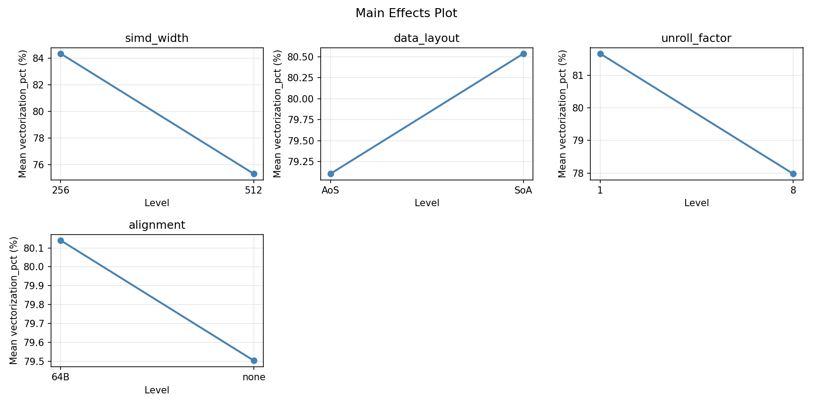
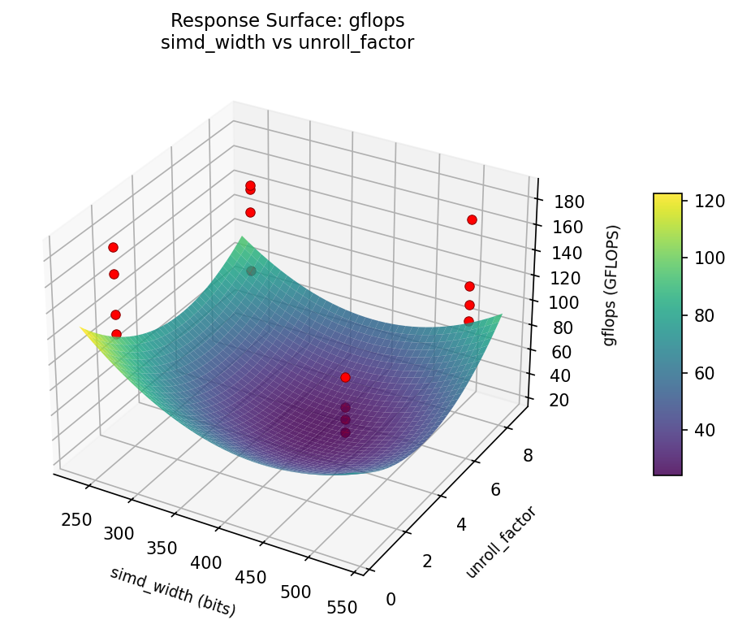
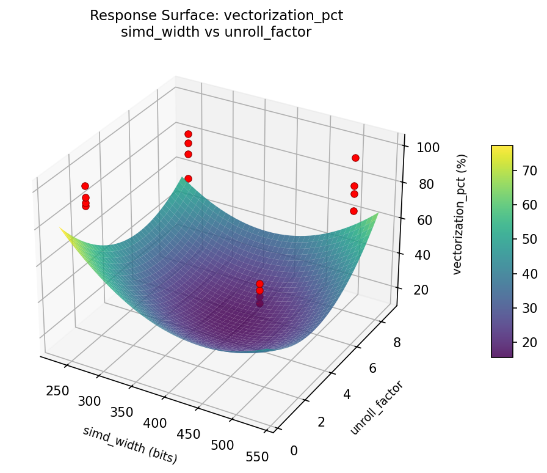

Summary
This experiment investigates simd vectorization tuning. Full factorial design to optimize SIMD vectorization strategy for stencil computation kernels on AVX-512 capable processors.
The design varies 4 factors: simd width (bits), ranging from 256 to 512, data layout, ranging from AoS to SoA, unroll factor, ranging from 1 to 8, and alignment, ranging from none to 64B. The goal is to optimize 2 responses: gflops (GFLOPS) (maximize) and vectorization pct (%) (maximize). Fixed conditions held constant across all runs include processor = Xeon_8490H, kernel = 7pt_stencil, grid size = 512x512x512, precision = double.
A full factorial design was used to explore all 16 possible combinations of the 4 factors at two levels. This guarantees that every main effect and interaction can be estimated independently, at the cost of a larger experiment (16 runs).
Quadratic response surface models were fitted to capture potential curvature and factor interactions. The RSM contour plots below visualize how pairs of factors jointly affect each response.
Key Findings
For gflops, the most influential factors were alignment (50.8%), unroll factor (28.1%), data layout (12.3%). The best observed value was 184.01 (at simd width = 256, data layout = SoA, unroll factor = 8).
For vectorization pct, the most influential factors were alignment (66.3%), unroll factor (20.9%), data layout (12.1%). The best observed value was 100.0 (at simd width = 256, data layout = SoA, unroll factor = 8).
Recommended Next Steps
- Consider whether any fixed factors should be varied in a future study.
Experimental Setup
Factors
| Factor | Levels | Type | Unit |
|---|
simd_width | 256, 512 | continuous | bits |
data_layout | AoS, SoA | categorical | |
unroll_factor | 1, 8 | continuous | |
alignment | none, 64B | categorical | |
Fixed: processor = Xeon 8490H, kernel = 7pt stencil, grid_size = 512^3, precision = double
Responses
| Response | Direction | Unit |
|---|
gflops | ↑ maximize | GFLOPS |
vectorization_pct | ↑ maximize | % |
Experimental Matrix
The Full Factorial Design produces 16 runs. Each row is one experiment with specific factor settings.
| Run | simd_width | data_layout | unroll_factor | alignment |
|---|
| 1 | 256 | SoA | 8 | 64B |
| 2 | 512 | AoS | 1 | 64B |
| 3 | 256 | SoA | 1 | 64B |
| 4 | 256 | SoA | 8 | none |
| 5 | 512 | SoA | 8 | none |
| 6 | 512 | AoS | 8 | none |
| 7 | 512 | SoA | 1 | none |
| 8 | 512 | AoS | 1 | none |
| 9 | 256 | AoS | 1 | 64B |
| 10 | 256 | AoS | 8 | none |
| 11 | 512 | SoA | 1 | 64B |
| 12 | 512 | SoA | 8 | 64B |
| 13 | 256 | SoA | 1 | none |
| 14 | 512 | AoS | 8 | 64B |
| 15 | 256 | AoS | 1 | none |
| 16 | 256 | AoS | 8 | 64B |
How to Run
$ python doe.py info --config use_cases/21_vectorization_simd_tuning/config.json
$ python doe.py generate --config use_cases/21_vectorization_simd_tuning/config.json --output results/run.sh --seed 42
$ bash results/run.sh
$ python doe.py analyze --config use_cases/21_vectorization_simd_tuning/config.json
$ python doe.py optimize --config use_cases/21_vectorization_simd_tuning/config.json
$ python doe.py report --config use_cases/21_vectorization_simd_tuning/config.json --output report.html
Analysis Results
Generated from actual experiment runs.
Response: gflops
Pareto Chart

Main Effects Plot

Response: vectorization_pct
Pareto Chart

Main Effects Plot

Response Surface Plots
3D surfaces fitted with quadratic RSM. Red dots are observed data points.
gflops: simd_width vs unroll_factor

vectorization_pct: simd_width vs unroll_factor

Full Analysis Output
=== Main Effects: gflops ===
Factor Effect Std Error % Contribution
--------------------------------------------------------------
unroll_factor 14.7963 7.5223 45.2%
simd_width -7.6963 7.5223 23.5%
data_layout 7.0412 7.5223 21.5%
alignment 3.1913 7.5223 9.8%
=== Interaction Effects: gflops ===
Factor A Factor B Interaction % Contribution
------------------------------------------------------------------------
data_layout unroll_factor -36.2237 31.7%
data_layout alignment 25.0362 21.9%
unroll_factor alignment -17.3137 15.1%
simd_width alignment 16.3437 14.3%
simd_width data_layout 11.9137 10.4%
simd_width unroll_factor 7.5287 6.6%
=== Summary Statistics: gflops ===
simd_width:
Level N Mean Std Min Max
------------------------------------------------------------
256 8 131.2812 31.1534 94.3000 184.0100
512 8 123.5850 30.5890 81.6200 164.1000
data_layout:
Level N Mean Std Min Max
------------------------------------------------------------
AoS 8 123.9125 33.2096 81.6200 184.0100
SoA 8 130.9537 28.4404 94.3000 170.7400
unroll_factor:
Level N Mean Std Min Max
------------------------------------------------------------
1 8 120.0350 31.9931 81.6200 170.7400
8 8 134.8313 28.1320 94.3000 184.0100
alignment:
Level N Mean Std Min Max
------------------------------------------------------------
64B 8 125.8375 29.2249 90.2200 184.0100
none 8 129.0288 32.8657 81.6200 170.7400
=== Main Effects: vectorization_pct ===
Factor Effect Std Error % Contribution
--------------------------------------------------------------
simd_width -8.3662 3.0185 39.1%
data_layout 5.0787 3.0185 23.7%
alignment -4.9513 3.0185 23.1%
unroll_factor 3.0037 3.0185 14.0%
=== Interaction Effects: vectorization_pct ===
Factor A Factor B Interaction % Contribution
------------------------------------------------------------------------
simd_width alignment 9.4938 21.9%
data_layout alignment 9.2537 21.4%
unroll_factor alignment -8.1863 18.9%
data_layout unroll_factor -7.2062 16.6%
simd_width unroll_factor 4.6737 10.8%
simd_width data_layout 4.4737 10.3%
=== Summary Statistics: vectorization_pct ===
simd_width:
Level N Mean Std Min Max
------------------------------------------------------------
256 8 84.0050 13.0520 64.5300 100.0000
512 8 75.6388 10.1015 60.2600 91.0000
data_layout:
Level N Mean Std Min Max
------------------------------------------------------------
AoS 8 77.2825 12.5333 60.2600 100.0000
SoA 8 82.3612 11.8562 64.5300 97.0100
unroll_factor:
Level N Mean Std Min Max
------------------------------------------------------------
1 8 78.3200 13.2411 60.2600 97.0100
8 8 81.3238 11.4851 64.5300 100.0000
alignment:
Level N Mean Std Min Max
------------------------------------------------------------
64B 8 82.2975 11.5988 67.7500 100.0000
none 8 77.3462 12.8004 60.2600 97.0100
Optimization Recommendations
=== Optimization: gflops ===
Direction: maximize
Best observed run: #12
simd_width = 256
data_layout = AoS
unroll_factor = 1
alignment = none
Value: 184.01
Factor importance:
1. unroll_factor (effect: -23.9, contribution: 50.7%)
2. alignment (effect: 14.9, contribution: 31.8%)
3. simd_width (effect: 7.3, contribution: 15.6%)
4. data_layout (effect: -0.9, contribution: 1.9%)
=== Optimization: vectorization_pct ===
Direction: maximize
Best observed run: #12
simd_width = 256
data_layout = AoS
unroll_factor = 1
alignment = none
Value: 100.0
Factor importance:
1. alignment (effect: 10.1, contribution: 49.0%)
2. simd_width (effect: 7.1, contribution: 34.2%)
3. data_layout (effect: -3.0, contribution: 14.4%)
4. unroll_factor (effect: -0.5, contribution: 2.4%)